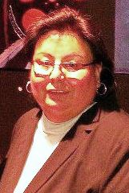

Welcome to the Indian Health Center of Santa Clara Valley. Call or E-mail me directly with your questions or feel free to leave me a message any time.
 Please contact: Stephanie Reynolds - CEC (Certified Enrollment Counselor)1333-C Meridian Ave. San Jose, CA 95125 Phone: (408) 445-3400 ext. 2870 Cell: (408) 914-0735 | Fax: (408) 269-9273 Email: sreynolds@ihcscv.org From 8:00am - 5:00pm (Monday thru Friday)
We would love to hear from you. When you come to visit our clinic, don't forget to complete our patient survey. You will have a chance to win a $30 gift card to Safeway.
Feel free to E-mail us directly with your questions or messages. Our doors open at 7:30 am Monday thru Saturday